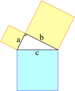

El teorema de Pitágoras establece que en todo triángulo rectángulo, el cuadrado de la longitud de la hipotenusa es igual a la suma de los cuadrados de las respectivas longitudes de los catetos.
Esto en una ecuación quedaría de la siguiente manera:
Si en un triángulo rectángulo hay catetos de longitud a y b, y la medida de la hipotenusa es c, entonces se cumple la siguiente relación:
c2=a2+b2
En un triángulo seria:

Ejemplo:
Si tenemos un triángulo con 3 cm de base, y su hipotenusa es de 5 cm, ¿Cuánto mide su altura?
Implementamos los datos del ejercicio en el teorema de Pitágoras:
52=32+b2
Resolvemos la ecuación:
25=9+b2 b2=16 b=4Por lo tanto:
Autor: José Elías Trad López.